Hi, I’m Nicolás, and for a while now, I’ve been learning how to improve my connectivity. I’m no expert, but through internet searches, tutorials, and, above all, trial and error, I’ve learned a ton.
I’ve already tested and installed several solutions, and today, I’m sharing one of them with you: the DIY 3G antenna. Let’s get started!
What is building a DIY 3G antenna?
Building a 3G antenna means that by gathering and assembling easily accessible materials, you can boost the 3G and 4G signal strength of a cell phone or a MiFi-type modem →.
What is it for?
This DIY antenna will increase the capacity to receive the waves that carry the 4G signal → (mobile internet), thereby improving the connection quality on your cell phone or shared modem (MiFi →).
What do you need?
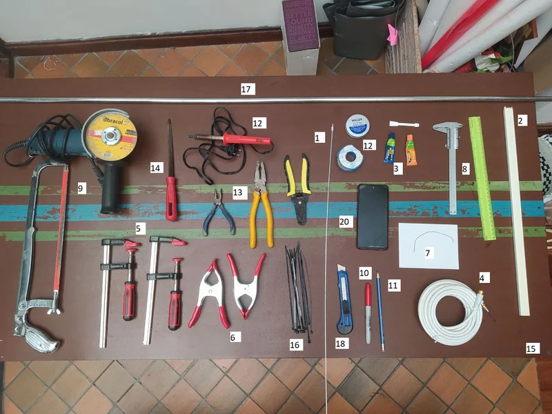
- Aluminum rod, 3 mm thick (it must be exactly 3 mm).
- 50 cm of plastic wire channel (ideally 2 cm wide).
- Quick-drying epoxy glue (usually comes in two tubes).
- 10 m of coaxial cable (or whatever length you need for the antenna to reach the connection point).
- 2 clamps or vises.
- 2 locking pliers.
- 20 cm of copper wire (recommended: 1 mm thick).
- A ruler (even better if you have a “caliper,” as it allows for more precision).
- Hacksaw (if you can get an electric grinder with a thin cutting disc, you’ll save a looot of time).
- Fine-tip permanent marker (e.g., Sharpie).
- Pencil.
- Soldering iron, solder, soldering flux.
- Pliers and wire cutters (the latter is optional).
- Metal file.
- Workbench with good lighting.
- Plastic zip ties (also known as “zuchos”).
- Pole to mount the antenna (a guadua bamboo pole as long as possible, or a rigid rod of any material).
- Utility knife, cutter.
- Wire stripper (optional).
- Cell phone or shared modem (MiFi).
- Also… good vibes.
- Patience.
- Lots of precision.
How to do it?
Step 0 → Before starting, some safety recommendations
This solution has an intermediate difficulty level and involves using tools that can cause accidents if you aren’t careful. That’s why it’s important to keep the following recommendations in mind:
- When using any sharp object, position it so that the cutting force is directed away from your body, not toward it.
- Keep pets and children away from the workspace, mainly because of the risk of contact with a hot soldering iron.
- Before cutting, make sure the clamps or pliers holding the material don’t allow for the slightest movement when you apply force.
- When using solder and epoxy glue, protect your work surface to avoid damaging it.
- Do not hoist the antenna during a storm, as it could act as a lightning rod and attract a strike to your area.
Step 1 → Check the materials
Before starting, check and have all the necessary items on hand. If you aren’t familiar with any of the materials, you can find them in the photo where the materials are numbered.
You can buy these at your nearest hardware store since they are common items; it shouldn’t be too hard to find them. Perhaps the most difficult (and important) item on the list is the aluminum rod. Sometimes you can find elements made with this type of rod in the metal supports sold in stores that carry many imported products. At SOLE Voltaje, we have used different metals: copper, welding rods, and galvanized wire. We opted to buy a 3mm steel welding rod. If you can’t find aluminum at the hardware store, you can ask for other options; the important thing is that the diameter is as close as possible to 3mm or 1/8 of an inch.
Now, organize your workspace, keep these instructions handy, and divide the tasks among the participants: someone can be in charge of measuring, others of cutting, organizing, and gluing.
Step 2 → Understand the diagram
Below, we show you the final diagram and some of the assembly parts so you have a clearer idea of the final setup.
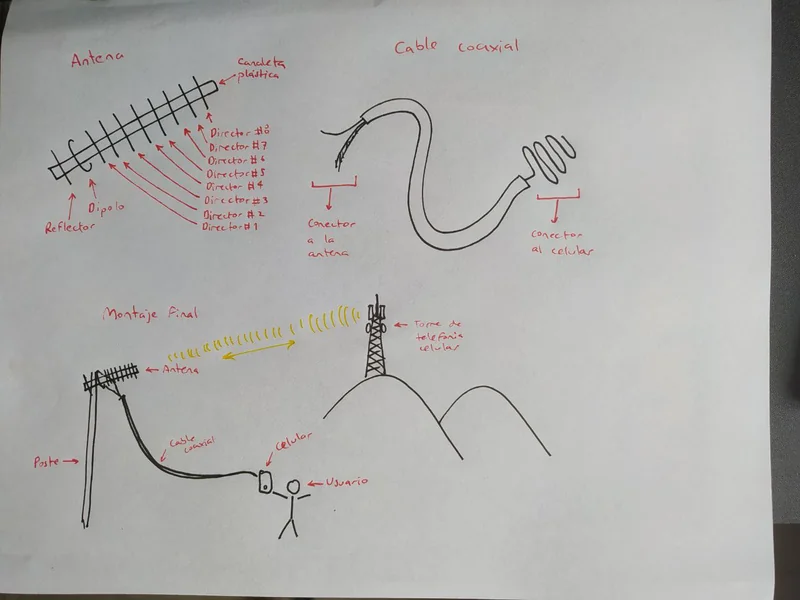
Step 3 → Measure, cut, and mark**
It’s time to start! Here we get to work; you must cut each of the 10 elements that make up the antenna. With the help of the caliper (or ruler), mark the length of each one and cut them with the hacksaw or grinder. It’s recommended to cut one or half a millimeter extra and finish adjusting the length by filing the edges with the metal file. Listed below are the lengths of the 10 metal rods you need to cut; in the world of antennas, these have specific names (director, reflector, and dipole) related to the function they perform.
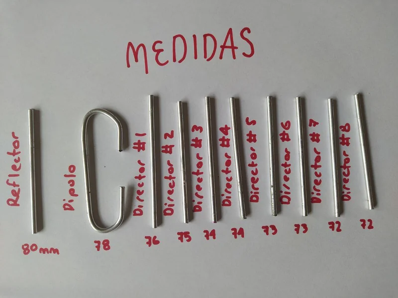
This is the list of necessary cuts:
- Reflector: 8.0 cm
- Dipole: 18 cm (This should be the length of the element; the bent rod should be exactly 7.6 cm, for now, just cut the rod to this length).
- Director #1: 7.6 cm
- Director #2: 7.5 cm
- Director #3: 7.4 cm
- Director #4: 7.4 cm
- Director #5: 7.3 cm
- Director #6: 7.3 cm
- Director #7: 7.2 cm
- Director #8: 7.2 cm
📏 Remember that 10 mm = 1 cm
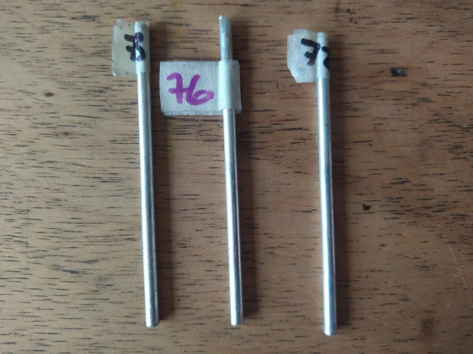
It’s important to mark each of the cuts with tape, as seen in the photo, to make the next step easier.

Step 4 → Bend the dipole
The dipole is an element bent into a “C” shape. Its total length should be 7.6 cm, but the rod needs to be a bit longer (approximately 18.0 cm). Making this piece is a trial-and-error task. In my case, it has worked well to slowly bend the rod against a circular tube 2 cm in diameter to give it the curve.
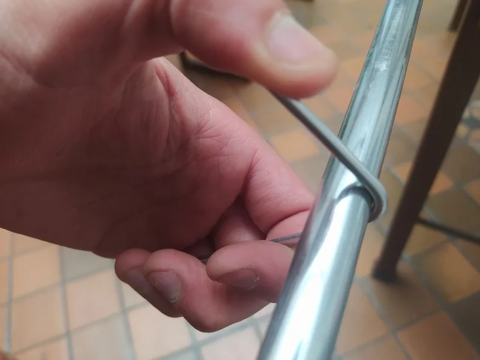
Step 5 → Assembling the antenna
We’re halfway through the process—don’t get discouraged, there’s very little left! Now it’s time to mount the elements onto the wire channel. This can be replaced by wood or any other material you have on hand, as long as it doesn’t conduct electricity.
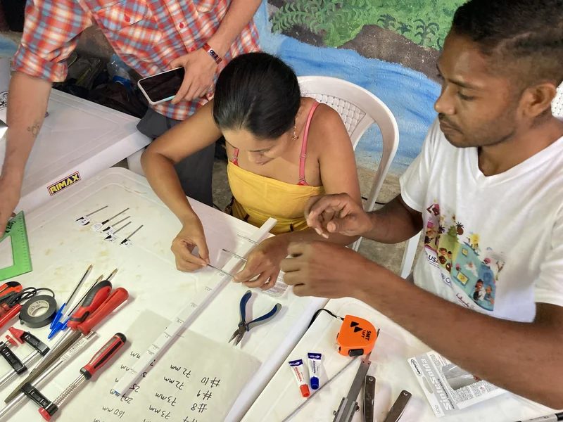
On the surface of the channel, you need to mark the following distances, where each of the rod cuts made in the previous step will be placed later.
- Reflector: 1.0 cm
- Dipole: 5.0 cm
- Director #1: 6.2 cm
- Director #2: 9.2 cm
- Director #3: 12.8 cm
- Director #4: 17.0 cm
- Director #5: 21.7 cm
- Director #6: 26.7 cm
- Director #7: 31.9 cm
- Director #8: 37.4 cm
Once the lines are marked, you can glue each of the rods with epoxy glue onto the channel; however, we’ve seen that this configuration is very fragile and doesn’t make our antenna last very long. For this reason, we found a better way to attach the rods to the channel. We can use the hot soldering iron, which can easily pierce the plastic with its fine tip; so, with this tool, we will drill the sides until they have a sufficient diameter for the rod to pass through. Take advantage of the plastic while it’s still hot right after you drill it to pass the rod through and ensure it has the right diameter. This should be done on both sides of the channel so the rod can go all the way through.
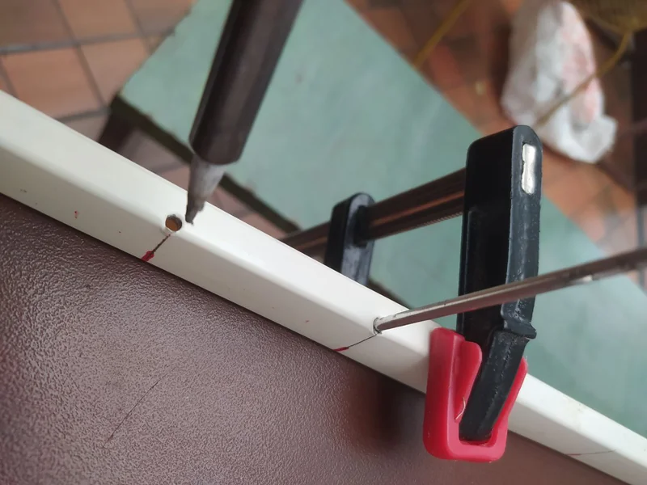
Once you finish the 20 holes, you should disassemble the channel and use the metal file to remove the plastic burrs to allow the rods to enter easily.
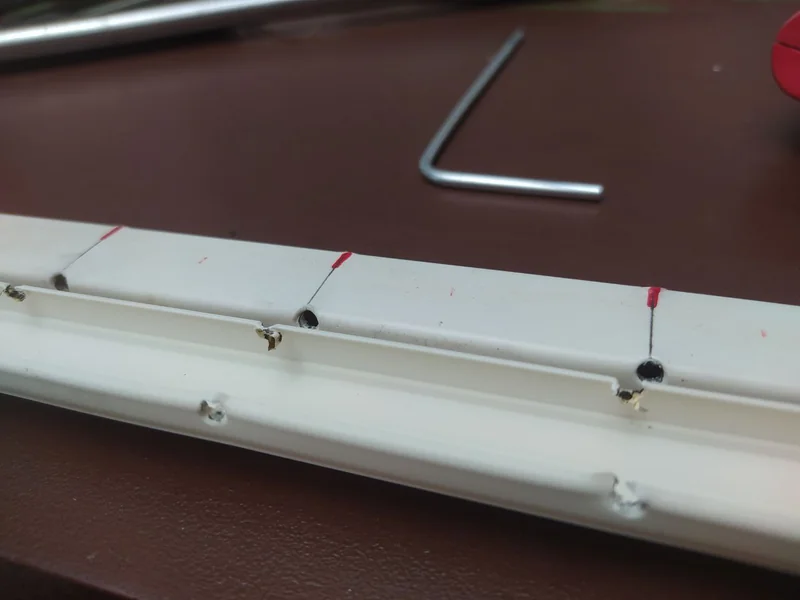
Now, before positioning each of the rods, we must make a small cut to facilitate the entry of the dipole. To do this, we must disassemble the channel and use the hacksaw to make a vertical cut that crosses the sides of the second measurement (5.0 cm) until it reaches the hole we opened with the soldering iron.
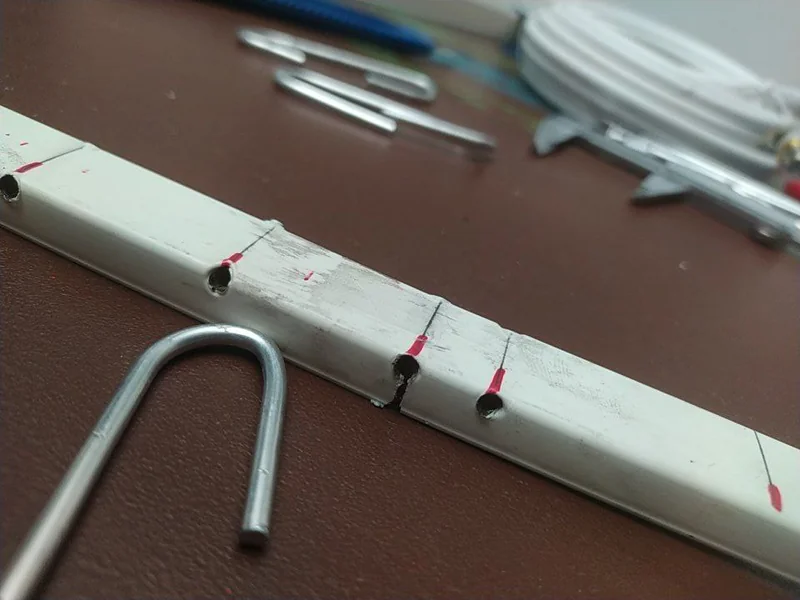
Once the dipole is embedded, we can insert the other rods according to the order mentioned above.
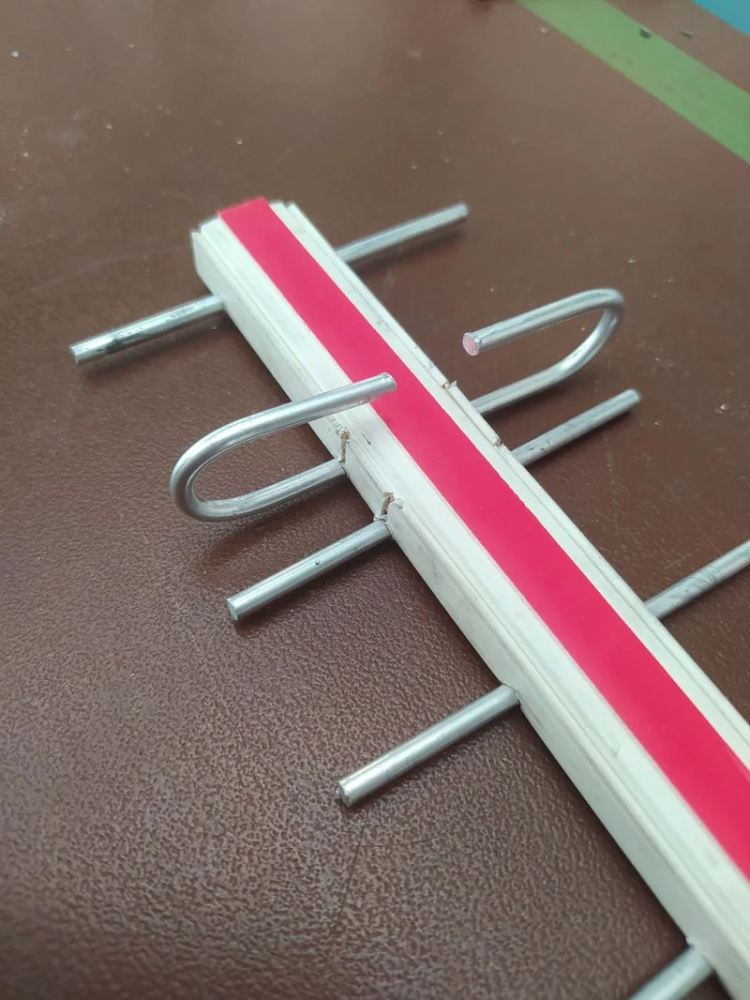
You can add a bit of epoxy glue on the rod to ensure the elements remain well-adhered to the channel. Wait for the necessary time for the glue to dry before continuing with connecting the cable to your new antenna.
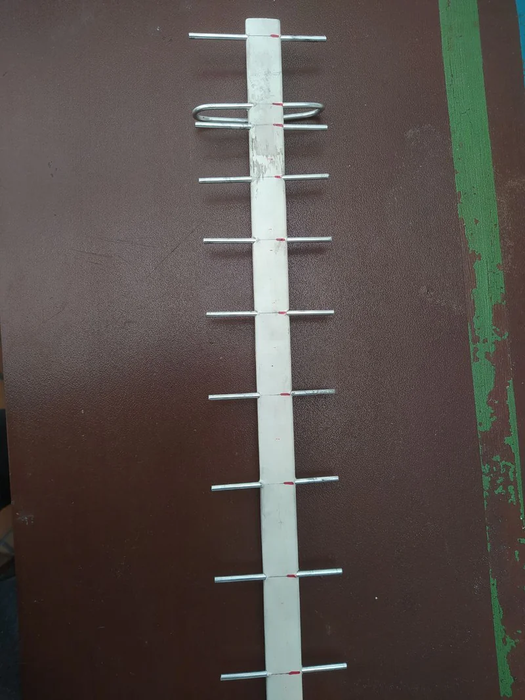
Step 6 → Prepare the cable
While the glue is drying, you can move on to preparing the coaxial cable. You can check the previous post to understand how a coaxial cable is made before taking it apart.

To do this part, you can use a wire stripper or a cutter to separate each layer of the cable; you must be careful when cutting so as not to break the first layer, which is a metal mesh. Thus, at one end, you need to leave the copper wire and the cable mesh free. You can carefully separate the mesh and then braid it back together.
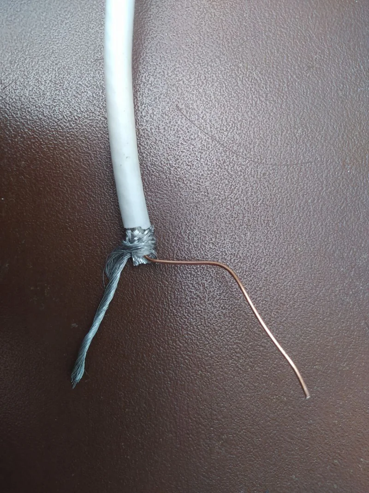
At the other end, with the copper wire, make a wave shape, which will be the element that comes into contact with the phone or MiFi to improve the signal.
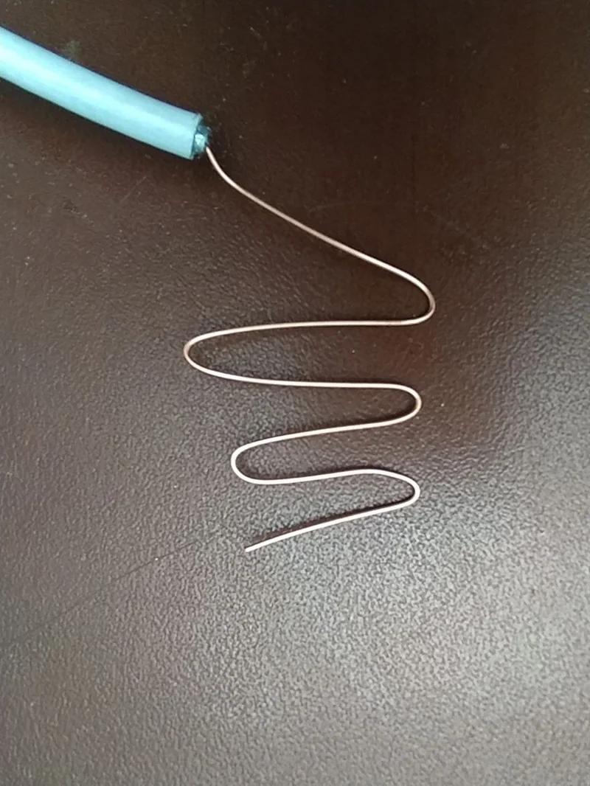
Step 7 → Solder the dipole
This is one of the most delicate steps; after this, we move on to assembly. Remember that the dipole is one of the fundamental components of the antenna; it must be soldered to the end of the coaxial cable that we separated into the mesh and the copper wire, and this, in turn, connects with a copper wire acting as a bridge between each end of the dipole. First, we make the bridge with the copper wire as seen in the image, where each end is braided and then soldered.
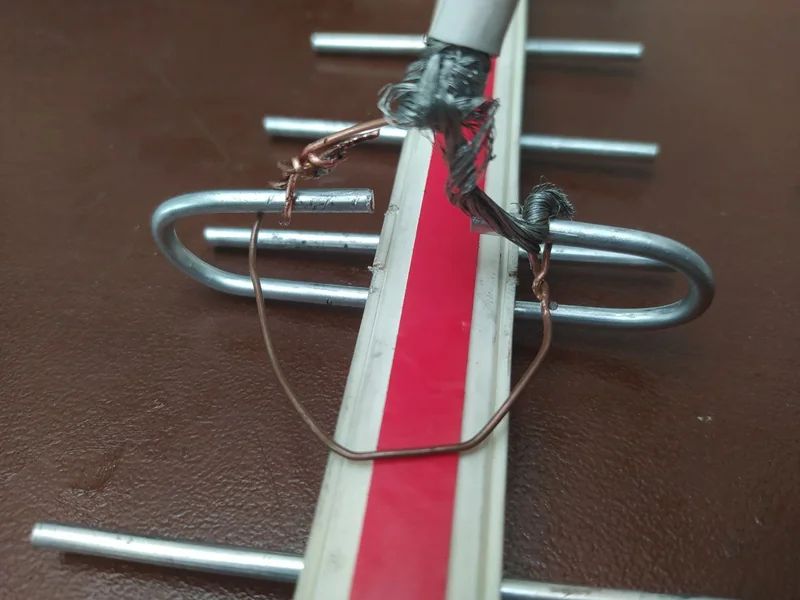
Once we have the copper wire soldered to the two ends of the coaxial, we can attach it to the dipole; for this, we can first tighten it a bit with pliers and then proceed to solder.
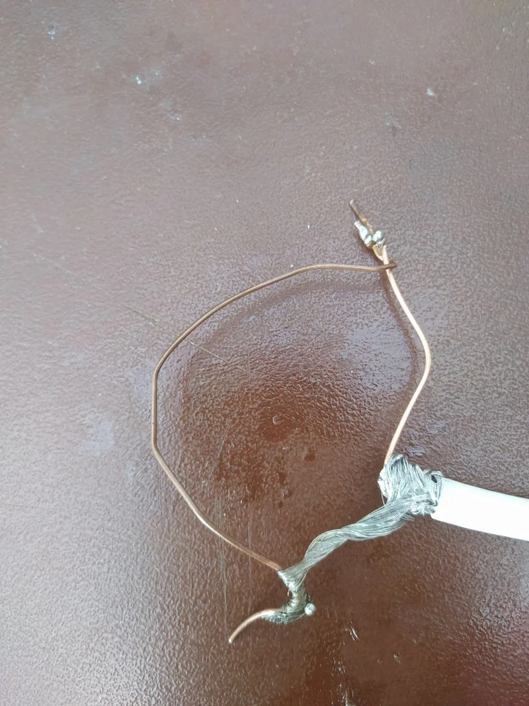
Remember that the dipole must be perpendicular to the channel, so to avoid sudden movements of the cable that would change this position, we must secure the cable with some plastic zip ties.
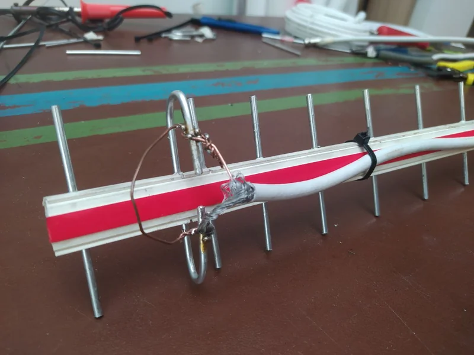
Step 8 → Final assembly
We’re finally done; you can now mount and install the antenna! To do this, make sure it is well-secured with plastic zip ties at the highest part of the pole; the antenna should be oriented so that the dipole is as close as possible to the pole.
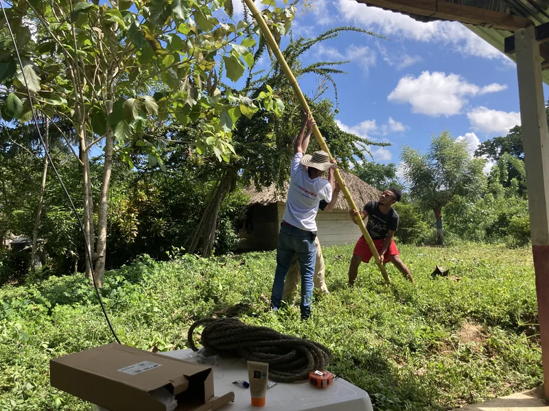
Remember to also tie the cable to the pole so it doesn’t pull away from the solder points on the antenna. Now, hoist the pole and make sure the antenna is pointing in the direction of the nearest cell tower.
Now, at the other end of the cable, place your cell phone so that the copper coil is touching the back of the device.
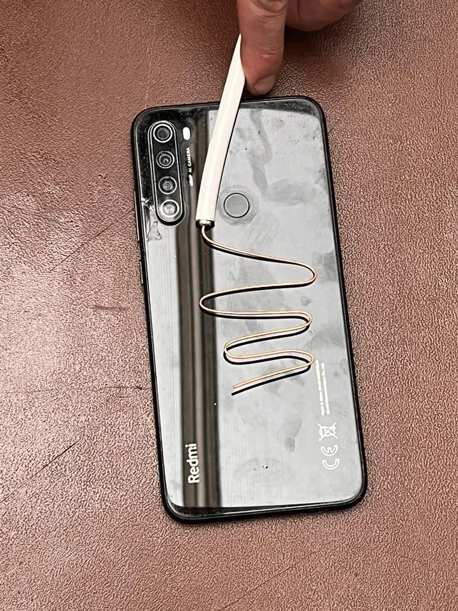
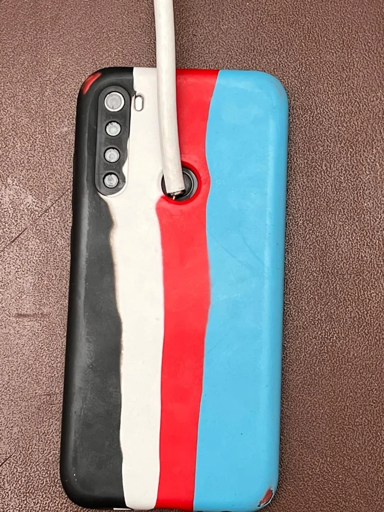
The process of aiming the antenna must be done slowly and carefully; waves are very sensitive to movement. First, you can establish a “0” position, and from there, you can turn it to the right or left in small intervals. After each movement, you can check the connection quality with the cellular network from the phone’s “Settings” screen. This is a number expressed in decibels (dB); the higher it is, the lower the signal quality. You can also do it by looking at the signal icon intensity that appears at the top of the cell phone. The challenge is to find the spot where the decibel number is lowest or where the signal intensity icon is highest.
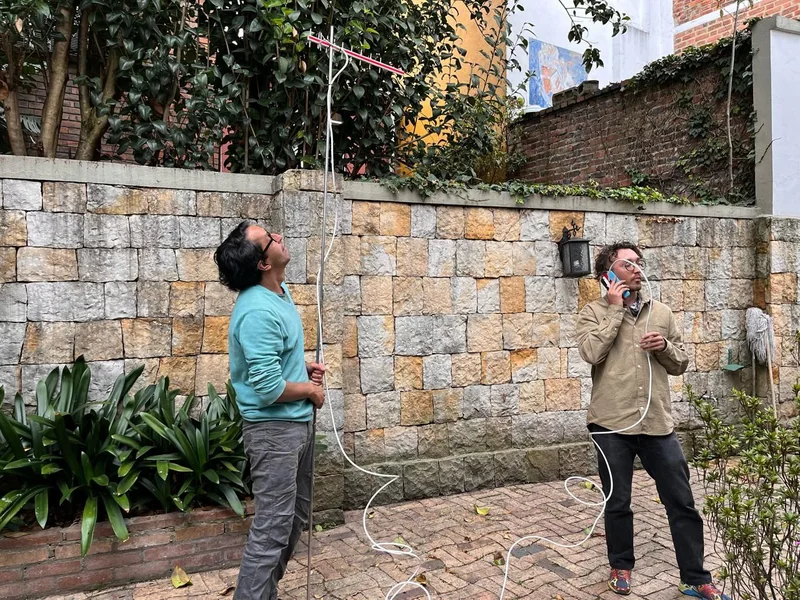
Now, you can proceed to secure the pole in this position and that’s it! Happy surfing!
Recommendations for potential trouble spots
If you are using solder and it keeps slipping, it might be that the tin solder you bought isn’t compatible with the metal of the rods you are using, so we recommend looking for different solder or trying to make contact between the cable and the rod by tightening them well with a wire. Normally, each metal is compatible with solder of the same metal (steel with steel solder, tin with tin solder).
__
How do I know if this solution works?
We can know if this solution works by doing speed tests →. You can compare by taking measurements with and without the antenna to recognize how much the signal improves with this device.
Through trial and error, you’ll feel more and more confident to tinker (or “cacharrear”), which means solving things by doing. Now, would you be up for trying another solution? Keep on surfing! See more solutions →
Other possible Internets
This solution can work to temporarily improve your connectivity conditions. The antenna will serve as an amplifier for the transmission and reception of waves for your devices.
Knowing this, how far would you like to go? Is this a solution you could build where you live? We hope it has been useful to you! And if it was, share it with others who you know could benefit from it.
See you soon! 👋🏽
Related solutions
- Now that you have better Internet, you can share it with others: How to share Internet from my cell phone? →
- If this antenna isn’t enough, you can call your community to buy a community 3G/4G antenna. This solution can help you make the decision: 4G antenna? →
- Using the internet in a group is more comfortable from a computer: How to get donated equipment? →
- And of course, with people! Invite others to learn together: Learn to design an express invitation without being an expert! →
Remember that at Voltaje ⚡⚡ you can find many more solutions to connect without fear of using the internet in a group. Keep on surfing! See more solutions →
References
- YouTube video: Homemade portable 1800 MHz 4G LTE signal amplifier →